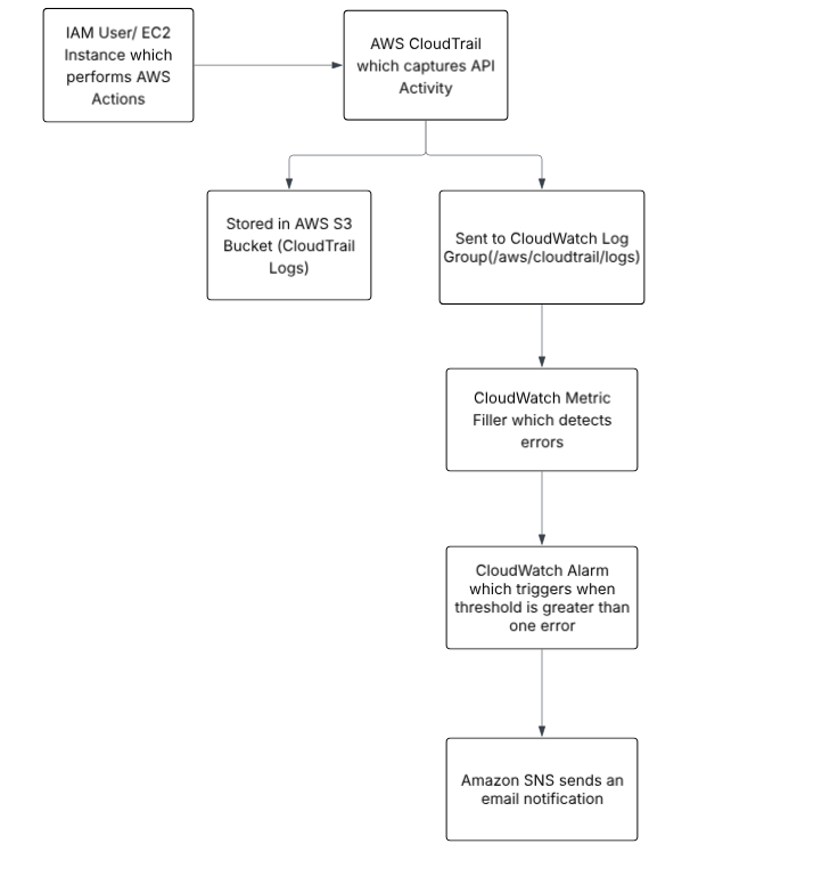

This project goes in to detail about the different AWS services such as S3, IAM, EBS, EC2, EFS, CloudTrail, CloudWatch and WAF. This project integrates how we can set up different services and how to monitor them and set up alerts for any errors.

Here is the architecture diagram which shows the purpose of the CloudTrail and CloudWatch programs with monitoring other AWS services.
Here are the links to the webpages for the project